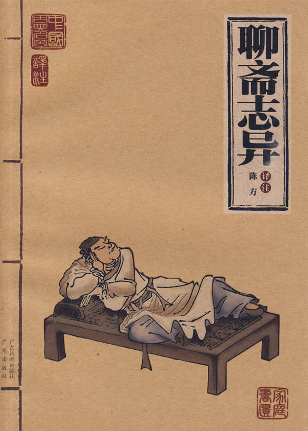

第1章 画壁
第1章 画壁#

江西孟龙潭，与朱孝廉客都中。偶涉一兰若，殿宇禅舍，俱不甚弘敞，唯一老僧挂褡其中。见客入，肃衣出迓，导与随喜。殿中塑志公像，两壁画绘精妙，人物如生。东壁画散花天女，内一垂髫者，拈花微笑，樱唇欲动，眼波将流。朱注目久，不觉神摇意夺，恍然凝想。身忽飘飘，如驾云雾，已到壁上。见殿阁重重，非复人世。一老僧说法座上，偏袒绕视者甚众，朱亦杂立其中。少间，似有人暗牵其裾。回顾，则垂髫儿，冁然竟去。履即从之。过曲栏，入一小舍，朱次且不敢前。女回首，举手中花，遥遥作招状，乃趋之。舍内寂无人。遽拥之，亦不甚拒，遂与狎好。既而闭户去，嘱勿咳，夜乃复至。如此二日。女伴觉之，共搜得生，戏谓女曰：“腹内小郎已许大，尚发蓬蓬学处子耶？”共捧簪珥，促令上鬟。女含羞不语。一女曰：“妹妹姐姐，吾等勿久住，恐人不欢。”群笑而去。生视女，髻云高簇，鬟凤低垂，比垂髫时尤艳绝也。四顾无人，渐入猥亵，兰麝熏心，乐方未艾。忽闻吉莫靴铿铿甚厉，缧锁锵然，旋有纷嚣腾辨之声。女惊起，与生窃窥，则见一金甲使者，黑面如漆，绾锁挈槌，众女环绕之。使者曰：“全未？”答言：“已全。”使者曰：“如有藏匿下界人，即共出首，勿贻伊戚。”又同声言：“无。”使者反身鹗顾，似将搜匿。女大惧，面如死灰，张皇谓朱曰：“可急匿榻下。”乃启壁上小扉，猝遁去。
朱伏，不敢少息。俄闻靴声至房内，复出。未几，烦喧渐远，心稍安；然户外辄有往来语论者。朱跼蹐既久，觉耳际蝉鸣，目中火出，景状殆不可忍，惟静听以待女归，竟不复忆身之何自来也。时孟龙潭在殿中，转瞬不见朱，疑以问僧。僧笑曰：“往听说法去矣。”问：“何处？”曰：“不远。”少时，以指弹壁而呼曰：“朱檀越！何久游不归？”旋见壁间画有朱像，倾耳伫立，若有听察。僧又呼曰：“游侣久待矣。”遂飘忽自壁而下，灰心木立，目瞪足软。孟大骇，从容问之。盖方伏榻下，闻扣声如雷，故出房窥听也。共视拈花人，螺髻翘然，不复垂髫矣。朱惊拜老僧，而问其故。僧笑曰：“幻由人生，贫道何能解！”朱气结而不扬，孟心骇而无主。即起，历阶而出。
异史氏曰：“‘幻由人生’，此言类有道者。人有淫心，是生亵境；人有亵心，是生怖境。菩萨点化愚蒙，千幻并作，皆人心所自动耳。老僧婆心切，惜不闻其言下大悟，披发入山也。”
[今译]
江西的孟龙潭曾和一位姓朱的举人一起客居京城。有一天，他俩偶然走进一座寺庙里闲逛。这庙的佛殿和禅房都不太宽阔明亮，只有一个老和尚暂住在里面。老和尚见客人进来，便整衣相迎，领着他们在庙里各处参观。
佛殿里供奉着一尊志公塑像，两边的墙壁上画着精美绝伦的壁画，人物形象栩栩如生。东墙上画着散花天女。里面有个披着头发的少女，纤纤细手捏着一朵花，脸上露出甜蜜的笑容，樱桃小嘴微微张开，好像要说话，明亮的眼波像流动的清水一般。
朱举人一下子被这个仙女迷住了，久久注视着，不觉神魂颠倒，恍恍惚惚，想入非非。突然间，身体好像变得很轻很轻，腾云驾雾似的飞到墙上壁画里去了。这时，只见重重的殿阁楼台，已不是人间景象。有一个老和尚坐在佛堂上讲经说法，周围站着许多听讲的人。朱生也混杂在里面站立倾听。过了一会儿，他感觉到好像有人在偷偷地拉他的衣襟。回头一看，原来就是那位少女，她对着他妩媚一笑，转身就走。朱生立即迈步跟了过去，转过弯弯曲曲的回廊，那少女走进一间小屋。这时，他有点犹豫，徘徊不敢跟进。那少女回过头来，举起手里的花朵，远远地向他招呼。这样，他才放心大胆跟了进去。房子里没有人，朱生冲上去拥抱她，她也半依半就，于是就趁机欢好相亲。
事后少女关上门离去。临走时，吩咐朱生不要弄出声响，夜里她会再来。这样暗中来往，连续两天，终于被少女的女伴们发现了。她们跑到少女的小屋里，搜出了朱生，跟少女开玩笑说：“肚子里小郎君已经好大啦，干吗还要蓬散着头发充大姑娘？”她们捧来金簪和玉珥，催促少女把头发梳成高高的发髻。少女低着头，含羞不语。一个女伴说：“姐妹们，我们不要停留过久，再待下去人家恐怕不高兴了。”说完，大家嘻嘻哈哈地一一道别而去。
朱生再看少女，发髻如同一簇乌云，高高地盘结在头顶上，发型像只展翅低飞的凤凰，比起头发纷披时更加艳丽动人。看看四周无人，两人又亲昵起来。兰麝的芳香，沁人心脾，欢娱之情，越来越浓。
正当两人难舍难分之际，忽然外面传来嗒嗒哒的靴子声和哗啦啦的铁链声。紧接着又传来纷扰喧哗、争辩不休的声音。少女吃惊地爬起来，跟朱生一起往窗外偷看，只见一个面色漆黑的金甲使者，手执铜锤铁链，被众女伴围着。金甲使者说：“都来了吗？”众女子回答说：“已经全到了。”金甲使者又说：“如果有谁私下藏匿着下界的凡人，大家要立即告发，千万不要给自己找麻烦！”众女伴又齐声说：“没有。”金甲使者转过身来，像老鹰搜寻猎物一样四处扫视，好像要立即搜索一样。少女非常害怕，吓得脸如死灰，惊惶失措，悄悄对朱生说：“赶快藏到床底下去！”说完，就打开墙壁上的一扇小门，逃走了。朱生趴在床底下，吓得不敢大口喘气。过了一会，听见嗒嗒哒的靴子声传进屋里，随后又转了出去。再过一会儿，嘈杂的声音才渐渐远去，朱生怦然跳动的心才稍微安定。可是，他侧耳细听，屋外面还有来往说话的人。朱生忐忑不安地趴了很长时间，耳朵里如同蝉鸣般嗡嗡作响，眼冒金星，这种情景，实在难以忍受。但也不敢乱动，只有等待着女郎回来。朱生遭此惊吓，竟然都不记得自己是从哪里来的了。
这时，孟龙潭正在佛殿上参观，转眼之间找不到朱生，心里很奇怪，就问老和尚。老和尚笑着说：“他听讲经说法去了。”孟生又问：“在什么地方？”答道：“不远。”稍等了片刻，老和尚用手弹弹壁画，大声喊道：“朱施主，你怎么游了这么长时间还不回来呀！”顿时，就见墙上显现出朱生的画像，侧着耳朵站着，似乎在倾听什么。老和尚又大声呼喊：“你的同伴等你好久啦！”话音刚落，忽见朱生从壁画上轻轻飘落下来。到了地上，心如死灰，呆如木偶，直瞪着眼，腿足酸软。孟生见他这般模样，吓了一跳，就问他怎么回事，才知道朱生刚才正趴在床底下，听到敲击声像雷声一样，所以就冲出屋子探听。看壁画上那位手举鲜花的少女，发现她头上那螺形的发髻高高地翘起，已经再不是原先双鬟下垂的少女发式了。朱生惊讶地问老和尚这是什么缘故。老和尚笑笑说：“幻境是由人的内心产生的，贫僧怎能知道呢？”朱生心里郁闷，愁眉苦脸；孟生也心中骇怕，六神无主。于是两人马上起身沿着一级一级的台阶，走出了寺院。
异史氏说：“幻境是由人的内心产生的，说出这话的，像是一位深通哲理的人。一个人有了淫心，就会产生下流的幻境；一个人有了下流的心思，就会出现可怖的幻境。菩萨为了启发愚昧无知的人，显现千般幻境，实际上都是人的内心世界主动追求才产生的。老和尚苦口婆心很是诚恳，可惜朱孟二人没有听了他的话而大彻大悟，选择披发入山修养心性的道路。”